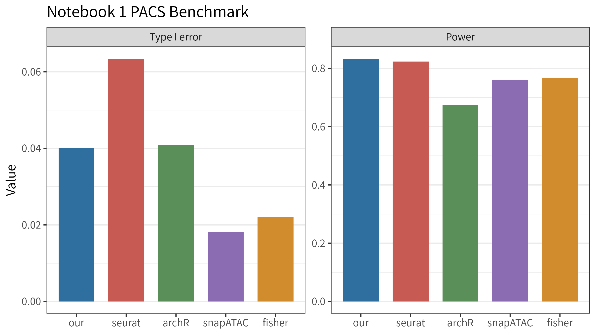
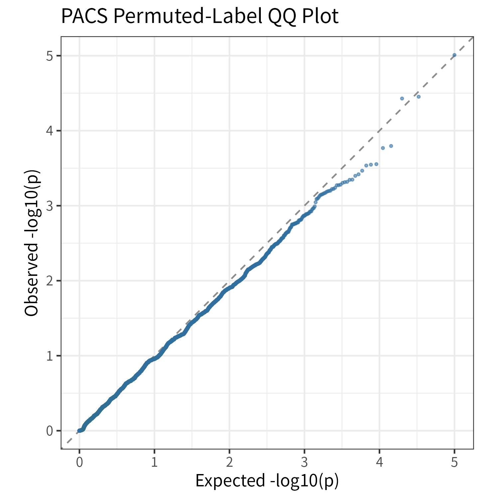
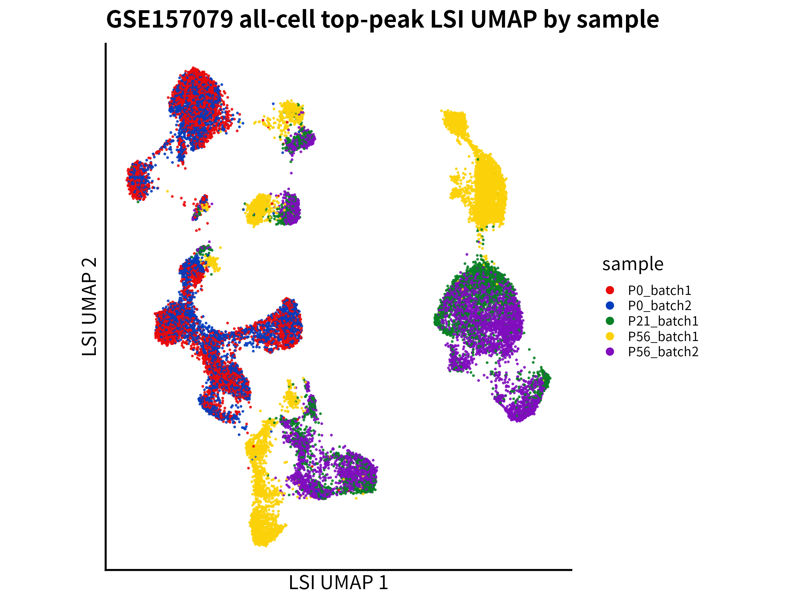
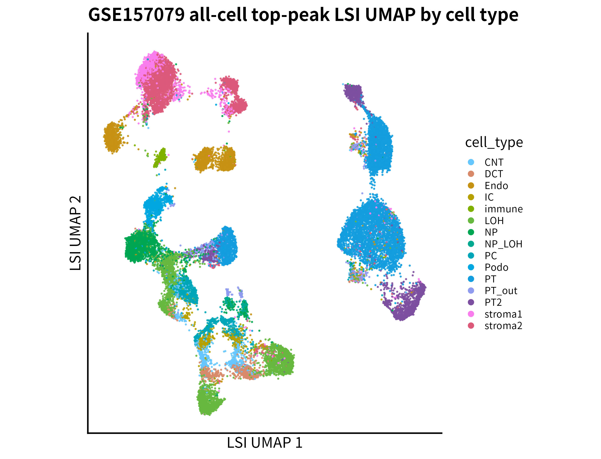
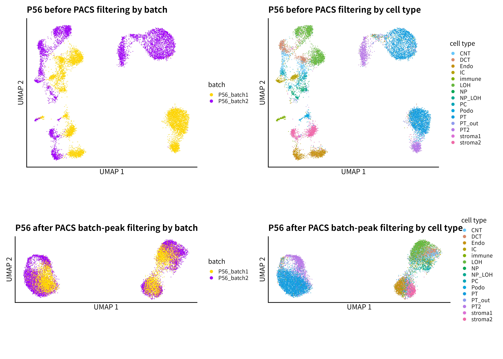
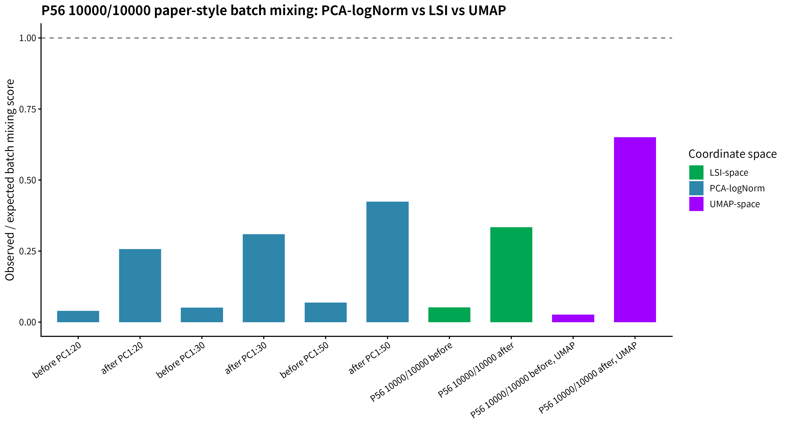
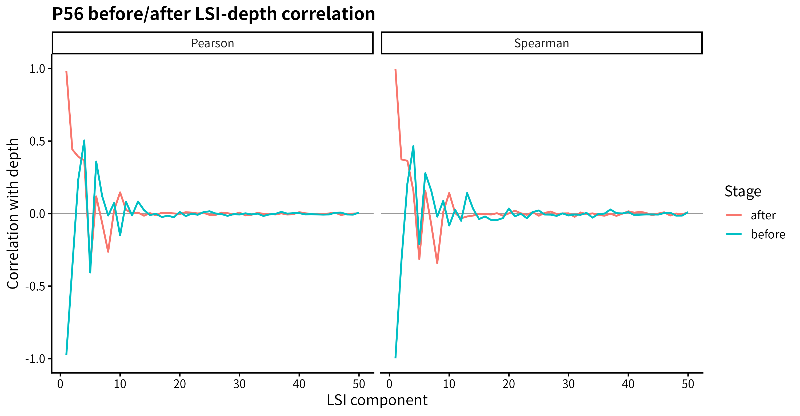
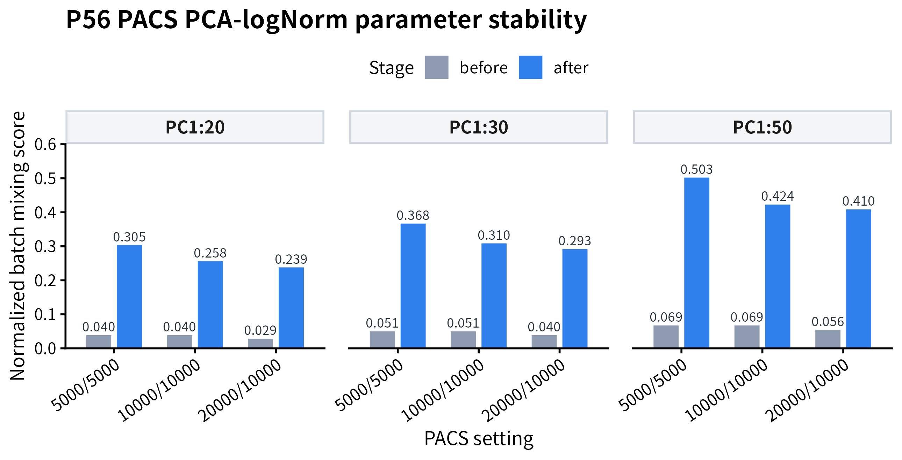

日期： 2026-06-07
当前定位： 阶段性 reconstruction。
项目仓库： https://github.com/Woodson-04/PACS_reproducing
本报告总结 PACS Notebook 1 benchmark 复现、GSE157079 小鼠肾脏 snATAC 数据接入、原始稀疏矩阵 UMAP 重建，以及 P56 两个批次的 batch-effect peak filtering 结果。全部结论来自已有输出文件。
本阶段首先复现 PACS 作者 Notebook 1 real kidney data benchmark，PACS 主方法达到 Type I error = 0.04008、power = 0.83337，说明主统计检验 workflow 已基本复现。随后接入公开 GSE157079 mouse kidney snATAC 数据，确认 cell-by-peak 稀疏矩阵大小(cells x peaks)。基于原始矩阵完成 all-cell TF-IDF/LSI/UMAP 重建，并在 P56 发育时期子集中使用 PACS 检测 batch-effect peaks(top10000 setting) ，PACS 过滤后umap作图，并使用三类混合指标(PCA-logNorm、LSI-space 与 UMAP-space)衡量批次效应，均显示过滤后 batch mixing 显著改善。
| 模块 | 核心结果 |
|---|---|
| Notebook 1 PACS benchmark | Type I error = 0.04008；power = 0.83337 |
| GSE157079 matrix | 28316 cells x 300755 peaks；166121193 nonzero entries |
| all-cell UMAP | top 20000 peaks；retained nonzeros = 85801336 |
| P56 subset | 13526 cells；P56_batch1 = 7129；P56_batch2 = 6397 |
| PACS filtering | tested peaks = 10000；significant batch peaks = 6305；retained peaks = 3695 |
| PCA-logNorm PC1:30 | normalized score: 0.0510 → 0.3097 |
| LSI_2:30 | normalized score: 0.0520 → 0.3343 |
| UMAP-space | normalized score: 0.02649 → 0.65073 |
本项目目标是进行 PACS 方法学复现，并在 GSE157079 小鼠肾脏 snATAC 数据上构建 PACS paper-style UMAP reconstruction。当前重点不是完整重建原始 dev-kidney-snATAC atlas，而是验证 PACS 是否能在真实 snATAC 数据中识别并过滤批次效应相关特征。
| 项目 | PACS 原文 Fig.3a–d 目标 | 当前复现状态 |
|---|---|---|
| 数据 | mouse kidney snATAC | GSE157079 public files |
| 分析对象 | batch-effect feature filtering 前后 UMAP | P56 two-batch subset |
| 特征范围 | 作者设定的 feature universe | top10000 tested peaks |
| batch 检验 | 控制生物学协变量后检测 batch effect | full: ~ cell_type + batch; null: ~ cell_type |
| 图像定位 | Fig.3a–d | Fig.3a–d author-style reconstruction |
当前边界包括：只使用P56数据处理，为对其他发育时期细胞处理；top10000 peaks有一定稳定性，但毕竟和作者的不一样
对 feature \(g\) 与 cell \(i\)，设 \(Y_{gi}\) 为 accessibility observation，\(q_i\) 为 cell-specific depth/capture-related factor，\(X_i\) 为协变量。
Null 与 full model 可抽象表示为：
$$M_{0,g}: Y_g \sim \text{depth/capture correction} + \text{covariates}$$ $$M_{1,g}: Y_g \sim \text{depth/capture correction} + \text{covariates} + \text{tested factor}$$对应假设为：
$$H_0: \beta_{g,\text{tested factor}} = 0$$每个 feature 输出 p-value \(p_g\)，并通过 Benjamini-Hochberg procedure 得到 \(\mathrm{FDR}_g = \mathrm{BH}(p_g)\)。benchmark 指标为：
$$\widehat{\mathrm{T1E}} = \frac{\#\{g \in H_0: p_g \le \alpha\}}{\#\{g \in H_0\}}$$ $$\widehat{\mathrm{Power}} = \frac{\#\{g \in H_1: p_g \le \alpha\}}{\#\{g \in H_1\}}$$ $$\overline{\mathrm{T1E}} = \frac{1}{R}\sum_{r=1}^{R}\widehat{\mathrm{T1E}}_r,\quad \overline{\mathrm{Power}} = \frac{1}{R}\sum_{r=1}^{R}\widehat{\mathrm{Power}}_r$$| Metric | PACS / our | Seurat | ArchR | snapATAC | Fisher |
|---|---|---|---|---|---|
| Type I error | 0.04008 | 0.06342 | 0.04096 | 0.01810 | 0.02208 |
| Power | 0.83337 | 0.82344 | 0.67437 | 0.76094 | 0.76630 |
| Description | PACS main method | clean-room baseline | clean-room approximation | clean-room edgeR-style baseline | binary Fisher exact test |


PACS 主方法的 Type I error 接近 0.05，power 与作者 notebook 结果接近。由于作者原始 baseline helper 文件不可用，baseline 结果为 clean-room reimplemented comparisons。
GSE157079 public files 包含 metadata、precomputed UMAP coordinates、peak list 与 cell-by-peak MatrixMarket sparse matrix。
| Cells | Peaks | Nonzero entries | Metadata rows | Peak list rows | Matrix orientation |
|---|---|---|---|---|---|
| 28316 | 300755 | 166121193 | 28316 | 300755 | cell x peak |
metadata 标准字段包括 row_index、cell_barcode、sample、cell_type、umap_1 与 umap_2。其中 row_index 用于合并 metadata 与 GEO UMAP coordinates。
| P56_batch1 | P56_batch2 | P0_batch1 | P0_batch2 | P21_batch1 |
|---|---|---|---|---|
| 7129 | 6397 | 5993 | 5436 | 3361 |
本节在不依赖 GEO 预计算 UMAP 坐标的情况下，直接从 GSE157079 原始 MatrixMarket cell-by-peak 稀疏矩阵出发，完成 feature selection、TF-IDF、LSI 与 UMAP 的重建流程。需要强调的是，本节使用的是全体细胞和 detection count 最高的 20,000 个 peaks，不是 all-features UMAP。
设原始稀疏 cell-by-peak 矩阵为\(X \in \mathbb{R}^{n \times p}\)，其中 \(n = 28316\) 表示细胞数，\(p = 300755\) 表示 peak 数。由于完整 all-feature 矩阵规模较大，跑all-features我的linux虚拟机内存和存储不够，本阶段先根据 peak detection count 选择前 \(K = 20000\) 个 peaks，得到子矩阵\(X^{(K)} \in \mathbb{R}^{n \times K}\)。因此，以下降维分析非全部 \(300755\) 个 peaks。
对细胞 \(i\) 和 peak \(j\)，首先计算 term frequency：
$$\mathrm{TF}_{ij} = \frac{X_{ij}}{\sum_l X_{il}}$$其中分母表示细胞 \(i\) 在所选 peaks 上的总 accessibility counts。随后定义 peak \(j\) 的 detection frequency：
$$\mathrm{df}_j = \sum_i \mathbf{1}(X_{ij} > 0)$$并据此计算 inverse document frequency：
$$\mathrm{IDF}_j = \log\left(1 + \frac{n}{\mathrm{df}_j}\right)$$TF-IDF 转换后的矩阵记为：
$$Z_{ij} = \mathrm{TF}_{ij}\mathrm{IDF}_j$$实际计算中进一步进行 log scaling：
$$Z'_{ij} = \log(1 + cZ_{ij})$$其中 \(c\) 为缩放常数。随后对 \(Z'\) 进行截断奇异值分解，得到 LSI 低维表示：
$$Z'\approx U_r \Sigma_r V_r^\top,\qquad L = U_r\Sigma_r$$本阶段取 \(r = 50\)，并使用 \(LSI_2:LSI_{30}\) 作为 UMAP 输入。排除 \(LSI_1\) 的原因在后文 LSI-depth QC 中进一步验证：在本数据中，\(LSI_1\) 与细胞测序深度高度相关，因此更适合作为 depth/QC 相关轴，而不作为主要 batch mixing 评价空间。
UMAP 在 LSI space 中构建近邻图，并优化二维布局\(Y \in \mathbb{R}^{n \times 2}\)，使低维空间中的邻域关系尽量保持高维 LSI 空间中的局部结构。
| Cells | Selected top peaks | Retained nonzeros | Sparse matrix dimension | LSI dimension | UMAP input |
|---|---|---|---|---|---|
| 28316 | 20000 | 85801336 | 28316 × 20000 | 28316 × 50 | LSI_2:LSI_30 |


该 all-cell top-peak UMAP 显示出 sample-associated structure，同时保留明显的cell-type structure。该结果的作用是提供全细胞层面的参考图，这为后续选取P56作为batch效应消除对象提供直观原因参考。
再次说明，这一结果不等同于 PACS 过滤前的 P56 before UMAP。我的Fig.3论文图复现是在后续 P56 子集上分别基于 top 10,000 peaks 和 PACS-retained peaks重新计算得到的 embedding。
选择 P56 subset 的原因是 P56 具有两个 batch，且两组细胞数量均较充足，可在同一年龄背景下检测批次效应相关特征，避免将 P0/P21/P56 的发育差异误解释为技术 batch effect。
| P56 cells | P56_batch1 | P56_batch2 | Cell types |
|---|---|---|---|
| 13526 | 7129 | 6397 | 15 |
在 R formula 中对应 formula_null = ~ cell_type 与 formula_full = ~ cell_type + batch。控制 cell_type 的目的是避免将细胞类型组成差异误判为 batch effect。
| n_top_peaks | Tested peaks | Significant batch peaks | Retained peaks | FDR cutoff | Before matrix | After matrix |
|---|---|---|---|---|---|---|
| 10000 | 10000 | 6305 | 3695 | 0.05 | 13526 x 10000 | 13526 x 3695 |
由于公开 GSE157079 文件不包含作者 Notebook 1 中使用的 q_vec，本阶段 cap_rates 使用 depth-derived approximation。
下图为 P56 two-batch top10000 setting 下的 Fig.3a–d author-style reconstruction：

before by batch 显示 P56_batch1 与 P56_batch2 呈现明显 batch separation；after by batch 显示移除 PACS-significant batch peaks 后 batch separation 减弱。before / after by cell type 用于评估 cell-type structure 是否得到保留。UMAP aspect ratio 与 global shape 不固定，与作者图差异可能来自 cell subset、feature universe、UMAP initialization/parameters 以及 plotting panel settings。
对 cell \(i\)，设 batch label 为 \(b_i\)，\(k\)-nearest neighbors 为 \(N_k(i)\)。cell-level score 为：
$$s_i = \frac{1}{k}\sum_{j \in N_k(i)} I(b_j \ne b_i)$$observed score 为：
$$S_{\mathrm{obs}} = \frac{1}{n}\sum_i s_i$$设 \(m_{ab}\) 表示 cell type \(a\)、batch \(b\) 下的 cell 数。给定细胞类型组成下的随机混合期望为：
$$S_{\mathrm{exp}} = \frac{1}{n}\sum_a\sum_b m_{ab}\left(\frac{\sum_{d \ne b}m_{ad}}{\sum_d m_{ad}}\right)$$normalized batch mixing score 为：
$$S_{\mathrm{norm}} = \frac{S_{\mathrm{obs}}}{S_{\mathrm{exp}}}$$\(S_{\mathrm{norm}}\) 接近 0 表示强 batch separation；接近 1 表示在给定 cell-type composition 下接近随机混合。batch mixing 越高通常越好，但必须同时考虑 cell-type preservation。
为避免仅凭二维 UMAP 图形判断 PACS filtering 效果，本报告在三个不同坐标空间中计算 paper-style normalized batch mixing score。三类空间的作用不同：PCA-logNorm 最接近 PACS 原文中的 normalized PCA mixing；LSI_2:30 是适用于 scATAC-seq 稀疏 accessibility 矩阵的补充低维空间；UMAP-space 则仅作为 visualization-level 的辅助指标。
| 指标层级 | 数学对象 | 解释 | 用途 |
|---|---|---|---|
| PCA-logNorm | log-normalized peak matrix 的 PCA score | 最接近 PACS paper normalized PCA mixing 的 author-like metric | 主指标 |
| LSI_2:30 | TF-IDF 矩阵的 truncated SVD score | scATAC-aware low-dimensional representation | 支持指标 |
| UMAP-space | 由高维邻域图优化得到的二维 embedding | visualization-level embedding | 辅助指标 |
设过滤前或过滤后的 cell-by-peak count matrix 为 \(X \in \mathbb{R}^{n \times p}\)。 首先对 accessibility counts 进行二值化，得到 \(B_{ij}=\mathbf{1}(X_{ij}>0)\)。记第 \(i\) 个细胞的 library size 为 \(d_i=\sum_j B_{ij}\)，并以中位数深度 \(d_{\mathrm{med}}\) 作为缩放基准，则 library-size normalized matrix 可写为：
$$ \widetilde{X}_{ij} = \frac{B_{ij}}{d_i}d_{\mathrm{med}} $$随后进行 log transformation：
$$ X^{\log}_{ij} = \log(1+\widetilde{X}_{ij}) $$对 \(X^{\log}\) 进行 PCA，取前 \(q\) 个主成分作为坐标空间：
$$ X^{\log} \approx T_q P_q^\top, \qquad C^{\mathrm{PCA}} = T_q $$其中 \(C^{\mathrm{PCA}}\in \mathbb{R}^{n\times q}\) 表示细胞在 PCA-logNorm 空间中的坐标。 本报告分别使用 \(q=20,30,50\) 计算 batch mixing score。
| PCA dimensions | before | after | fold change |
|---|---|---|---|
| PC1:20 | 0.0398 | 0.2576 | 6.48× |
| PC1:30 | 0.0510 | 0.3097 | 6.07× |
| PC1:50 | 0.0685 | 0.4239 | 6.19× |
LSI 空间来自 TF-IDF 矩阵的截断奇异值分解。设 TF-IDF 及 log scaling 后的矩阵为 \(Z'\)，则：
$$ Z' \approx U_r\Sigma_rV_r^\top, \qquad C^{\mathrm{LSI}} = U_r\Sigma_r $$其中 \(C^{\mathrm{LSI}}\in \mathbb{R}^{n\times r}\) 表示细胞的 LSI 坐标。 由于后文 QC 显示 \(LSI_1\) 与测序深度高度相关，本报告以 \(LSI_2:LSI_{30}\) 作为主要 LSI-space batch mixing 评价空间。
UMAP 以 PCA-logNorm 或 LSI 等高维坐标为输入，先构建细胞间的近邻图，再优化二维坐标 \(C^{\mathrm{UMAP}}\in \mathbb{R}^{n\times 2}\)，使低维空间尽可能保留高维空间的局部邻域结构：
$$ C^{\mathrm{UMAP}} = \operatorname{UMAP}(C^{\mathrm{high}}) $$因此，UMAP-space score 反映的是二维可视化空间中的邻域混合情况。由于 UMAP 会重塑局部和全局几何结构， 该指标只作为辅助说明，不作为最接近原文 normalized PCA mixing 的主指标。
对任一坐标空间 \(C\)，先在该空间中计算每个细胞 \(i\) 的 \(k\)-nearest neighbors， 记为 \(N_k(i)\)。设细胞 \(i\) 的 batch label 为 \(b_i\)，则细胞层面的 observed batch mixing score 为：
$$ s_i(C) = \frac{1}{k} \sum_{j\in N_k(i)} \mathbf{1}(b_j\neq b_i) $$数据层面的 observed score 为：
$$ S_{\mathrm{obs}}(C) = \frac{1}{n} \sum_{i=1}^{n} s_i(C) $$为控制 cell type composition 的影响，设 \(M=(m_{ab})\) 为 cell type-by-batch 计数矩阵， 其中 \(m_{ab}\) 表示 cell type \(a\)、batch \(b\) 中的细胞数。给定 cell type 组成下， 无 batch effect 时的期望不同 batch 邻居比例为：
$$ S_{\mathrm{exp}} = \frac{1}{n} \sum_a\sum_b m_{ab} \left( \frac{\sum_{d\neq b}m_{ad}}{\sum_dm_{ad}} \right) $$最终 normalized batch mixing score 定义为：
$$ S_{\mathrm{norm}}(C) = \frac{S_{\mathrm{obs}}(C)}{S_{\mathrm{exp}}} $$该指标越接近 1，表示在给定 cell type composition 后越接近随机 batch mixing； 越接近 0，则表示 batch separation 越强。需要注意，batch mixing score 的提高应与 cell-type preservation 指标共同解释，避免将真实生物学结构也一并消除。
| 坐标空间 | before | after | 解释 |
|---|---|---|---|
| PCA-logNorm PC1:30 | 0.0510 | 0.3097 | 最接近原文 normalized PCA mixing 的主结果 |
| PCA-logNorm PC1:50 | 0.0685 | 0.4239 | PCA 维度敏感性结果 |
| LSI_2:30 | 0.0520 | 0.3343 | scATAC-aware supporting metric |
| UMAP-space | 0.02649 | 0.65073 | visualization-level auxiliary metric |

三类坐标空间均显示 after-filtering score 高于 before-filtering score。 其中 PCA-logNorm 是最接近 PACS 原文 normalized PCA mixing 的主指标； LSI_2:30 是适合 scATAC-seq 稀疏矩阵的支持指标；UMAP-space 则用于说明二维可视化空间中的 邻域混合变化。因此，PACS filtering 的效果不只是 UMAP visualization artifact， 而是在 PCA-like 和 LSI 等高维表示空间中也得到支持。
在 scATAC-seq 的 TF-IDF/LSI 分析中，第一维 LSI component 常常与细胞测序深度或 global accessibility 强相关。由于本报告需要在 LSI space 中计算 batch mixing score， 因此有必要先检验 \(LSI_1\) 是否主要反映 depth/QC 轴。
| 阶段 | component | Spearman(depth) | Pearson(depth) |
|---|---|---|---|
| before | LSI_1 | -0.9983 | -0.9739 |
| after | LSI_1 | 0.9976 | 0.9830 |

结果显示，过滤前 \(LSI_1\) 与 depth 的 Spearman 相关系数为 \(-0.9983\)，过滤后为 \(0.9976\)，绝对值均接近 1。这说明 \(LSI_1\) 几乎完全由 depth/QC 相关信号主导。 因此，本报告采用 \(LSI_2:LSI_{30}\) 作为主要 LSI-space mixing score 的计算空间， 以降低测序深度轴对 batch mixing 评价的影响。
| LSI 维度 | before | after | improvement | 说明 |
|---|---|---|---|---|
| LSI_1:30 | 0.0576 | 0.2803 | +0.2227 | 包含 depth-dominated \(LSI_1\)，仍显示改善 |
| LSI_2:30 | 0.0520 | 0.3343 | +0.2823 | 主 LSI 指标；排除 \(LSI_1\) |
| LSI_2:50 | 0.0793 | 0.3730 | +0.2937 | 更多 LSI 维度下结论保持一致 |
| LSI_1:50 | 0.0766 | 0.3088 | +0.2322 | 包含 \(LSI_1\) 后改善幅度较低 |
维度敏感性分析显示，无论是否包含 \(LSI_1\)，以及使用 30 维还是 50 维， PACS filtering 后的 normalized batch mixing score 均高于过滤前，说明 batch mixing 改善并不依赖某一个特定的 LSI 维度选择。与此同时，排除 \(LSI_1\) 后的 \(LSI_2:30\) 与 \(LSI_2:50\) 均给出更高的 improvement，分别为 \(+0.2823\) 和 \(+0.2937\)，高于包含 \(LSI_1\) 的 \(LSI_1:30\) 与 \(LSI_1:50\)。这与前述 depth correlation QC 一致：\(LSI_1\) 主要反映测序深度相关变化，纳入该维度会削弱 LSI-space mixing score 对 batch correction 效果的解释性。因此，后续主报告采用 \(LSI_2:LSI_{30}\) 作为 scATAC-aware supporting metric。
本节用于补充说明两类参考信息。首先，GEO precomputed UMAP 只能作为 public atlas/reference embedding 在 UMAP-space 中进行比较，因为 GEO 文件提供的是二维 UMAP 坐标，而不是 PCA 或 LSI 坐标。其次，为了使参数稳定性分析更接近 PACS 原文中的 normalized PCA mixing，本节使用本项目重新计算的 PCA-logNorm space mixing score 比较不同 PACS 参数设置。
GEO precomputed UMAP 可能包含 atlas-level preprocessing、integration 或 correction steps， 因此不应解释为 PACS-filtered ground truth。由于 GEO 公开文件只提供 UMAP 坐标， 这里仅在 UMAP-space 中计算 normalized batch mixing score，用作可视化空间参考。
| setting | coordinate space | normalized score | 解释 |
|---|---|---|---|
| P56 10000/10000 before | UMAP-space | 0.02649 | PACS filtering 前的二维 UMAP 邻域混合程度 |
| P56 10000/10000 after | UMAP-space | 0.65073 | PACS filtering 后的二维 UMAP 邻域混合程度 |
| GEO P56 precomputed UMAP | UMAP-space | 0.93903 | 公开 atlas/reference embedding；不是 PACS-filtered ground truth |
在 UMAP-space 中，GEO P56 precomputed UMAP 的 normalized score 为 0.93903， 高于本项目 P56 PACS-filtered UMAP 的 0.65073。这说明 GEO 预计算 embedding 的 batch mixing 程度更高，但该结果可能反映了原 atlas-level processing 的综合效果。 因此，GEO UMAP 适合用作公开参考坐标，而不能作为 PACS feature-filtering 的直接标准答案。
为避免只依赖二维 UMAP 可视化指标，本项目进一步在 PCA-logNorm space 中比较不同 PACS 参数设置下的 paper-style normalized batch mixing score。该分析使用已有的 sparse count matrix、retained peak indices 与 metadata，不重新运行 PACS。由于该指标 在 PCA-like space 中计算，因此比 UMAP-space 辅助指标更接近 PACS 原文中的 normalized PCA mixing。
| setting | top peaks | tested peaks | significant peaks | retained peaks | PC1:30 before | PC1:30 after | PC1:50 before | PC1:50 after |
|---|---|---|---|---|---|---|---|---|
| 5000 tested | 10000 | 5000 | 3140 | 1860 | 0.0510 | 0.3679 | 0.0685 | 0.5032 |
| 10000 tested | 10000 | 10000 | 6305 | 3695 | 0.0510 | 0.3097 | 0.0685 | 0.4239 |
| 20000 top / 10000 tested | 20000 | 10000 | 6208 | 3792 | 0.0398 | 0.2928 | 0.0556 | 0.4097 |

PCA-logNorm 参数稳定性分析显示，三组设置在 PC1:30 和 PC1:50 中均表现出稳定的 before-to-after improvement。该结果说明，PACS filtering 对 batch mixing 的改善不仅存在于 UMAP 可视化空间中，也存在于更接近原文 normalized PCA mixing 的 PCA-logNorm space 中。
需要注意的是，after score 最高并不必然代表该参数设置最优。5000 tested peaks 设置在 PCA-logNorm space 中 after score 最高，但仅保留 1860 个 peaks，过滤更激进， 可能更容易损失 biological accessibility features。10000 tested peaks 设置保留 3695 个 peaks，并且此前在 cell-type preservation 指标中表现更平衡；20000 top / 10000 tested 设置与 10000 tested peaks 设置结果接近，可作为扩大 feature universe 后的 稳定性验证。因此，综合 batch mixing improvement、retained feature number 与 cell-type structure preservation，本报告仍以 10000 top / 10000 tested / FDR 0.05 作为当前主展示设置。
综上，GEO precomputed UMAP 仅作为 UMAP-space reference；参数稳定性分析则以 PCA-logNorm space 为主。二者回答的问题不同：前者说明公开 atlas embedding 的可视化混合程度， 后者检验本项目 PACS feature-filtering workflow 在 PCA-like space 中的稳定性。
| 局限性 | 含义 | 对结论的影响 |
|---|---|---|
| P56-only two-batch subset | 未覆盖 P0/P21/P56 全部细胞 | 结论限于 P56 batch filtering |
| top10000 peaks | 未测试全部 300755 peaks | 当前为 top-peak proof of concept |
| depth-derived cap_rates | 缺少作者原始 q_vec | 可能影响 PACS p-value calibration |
| PCA-logNorm implementation | 可能不同于作者内部 PCA preprocessing | 不直接比较作者数值 |
| GEO UMAP reference | public atlas/reference embedding | 不作为 PACS ground truth |
| baseline helper missing | Notebook 1 baseline 为 clean-room 实现 | 不声称完整复现 baseline |
| Fig.3e/f 未完成 | 尚未做 motif/gene-level extension | 当前报告聚焦 Fig.3a–d |
results/current_important_results_summary.mdresults/20260526_2318_large_baseline/summary.csvresults/mouse_kidney_figures/gse157079_matrix_alignment_smoke_test.mdresults/mouse_kidney_figures/gse157079_all_cells_top_peaks_lsi_umap/all_cells_top_peaks_lsi_umap_report.mdresults/mouse_kidney_figures/gse157079_p56_pacs_batch_filter_umap_p56_top10000_test10000_fdr005_lsi_saved/p56_pacs_batch_filter_umap_report.mdresults/mouse_kidney_figures/paper_style_batch_mixing_score_pca_space/p56_10000_pca_space_score_report.mdresults/mouse_kidney_figures/paper_style_batch_mixing_score_lsi_space/p56_paper_style_metric_final_interpretation.mdresults/mouse_kidney_figures/paper_style_batch_mixing_score_lsi_space/p56_lsi_depth_correlation_report.mdresults/mouse_kidney_figures/geo_precomputed_umap_quantification/geo_precomputed_umap_quantification_report.md本项目中 AI 协作主要用于阅读和整理已有脚本、结果表与报告，根据作者 notebook 逻辑辅助修复 PACS workflow，生成 GSE157079 数据接入、matrix-derived UMAP、P56 PACS filtering 与 batch mixing quantification 的阶段性总结。本报告中的数值均来自项目已有输出文件。